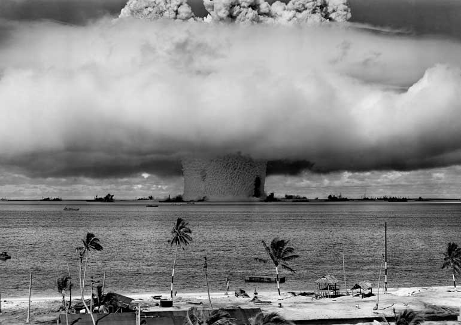
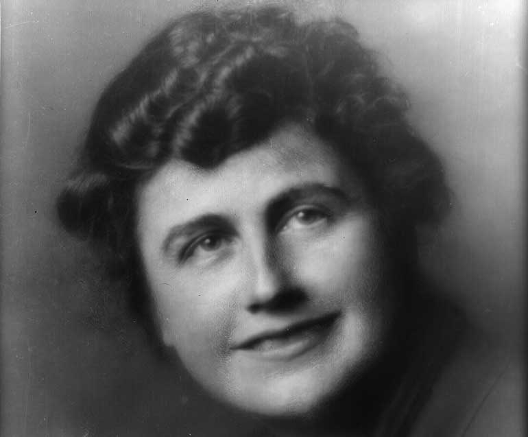

Laughing at conspiracy theories is good fun – at least until they turn out to be true. Take the conspiracy surrounding the “Project Sunshine,” for example. In the wake of Hiroshima and Nagasaki, the U.S. government commenced a major study to measure the effects of nuclear fallout on the human body. Conspiracy: The government was stealing dead bodies to do radioactive testing. The truth: The government was stealing parts of dead bodies. Because they needed young tissue, they recruited a worldwide network of agents to find recently deceased babies and children, and then take samples and even limbs – each collected without notification or permission of the more than 1,500 grieving families. The world only woke up to the the horrific scientic history of Project Sunshine half a century later. But there are still a lot of unexplained mysteries out there.
Conspiracy: During Prohibition, the government poisoned alcohol to keep people from drinking. The truth: Manufacturers of industrial alcohol had been mixing their product with dangerous chemicals for years prior to Prohibition. But between 1926 and 1933, the federal government pushed manufacturers to use stronger poisons to discourage bootleggers from turning the alcohol into moonshine. That didn’t stop the bootleggers or their customers, and by the end of Prohibition, more than 10,000 Americans had been killed by tainted booze. Much of the illegal booze was sold in infamous night spots called ‘speakeasies’ – so called from the practice of speaking quietly about such a place in public, or when inside it, so as not to alert the police and neighbours. Here are some more examples of words not used much nowadays

Conspiracy: A stroke rendered United States President Woodrow Wilson incapable of governing, and his wife surreptitiously stepped in. The truth: Wilson did suffer a debilitating stroke towards the end of his presidency – but the government felt it was in the country’s best interest to keep things quiet. The public didn’t learn about the stroke for months, during which time his wife, Edith Wilson, was making most executive decisions. Despite Mrs. Wilson claiming that she acted only as a “steward,” historians who have analyzed the Wilson term in office confirm that for well over a year, Mrs. Wilson was effectively president. And although a woman president is yet to be formally elected to the White House, here are ten quotes from the strongest women of the real world and silver screen for inspiration in the meantime.
Conspiracy: The CIA was testing LSD and other hallucinogenic drugs on Americans in a top-secret experiment on behavior modification. The truth: The program was known as MK-ULTRA, and it was real. The CIA started by using volunteers – the novelist Ken Kesey was one notable subject. But the program heads soon began dosing people without their knowledge; MK-ULTRA left many victims permanently mentally disabled. At the present time, another drug that alters food and perception and is causing great public concern because of its harmful effects is meth.
Conspiracy: With the advances in technology, the government is using its vast resources to track citizens. The truth: In 2016, government agencies sent 49,868 requests for user data to Facebook, 27,850 to Google, and 9,076 to Apple, according to the Electronic Frontier Foundation (the EFF), a major nonprofit organisation that defends civil liberties in the digital world and advises the public on matters of internet privacy. If you are concerned about your internet privacy, we asked technology experts to give us the lowdown on the likelihood you are being watched through your computer camera.
Conspiracy: The Gulf of Tonkin incident on August 2, 1964, was faked to provoke American support for the Vietnam War. The truth: By the time news reached American ears, the facts surrounding the North Vietnamese attack on the American Naval ship Maddox were already fuzzy. Declassified intelligence documents have since revealed that the Maddox had provided support for South Vietnamese attacks on a nearby island and that the North Vietnamese were responding in kind, according to the U.S. Naval Institute. The event “opened the floodgates for direct American military involvement in Vietnam.”